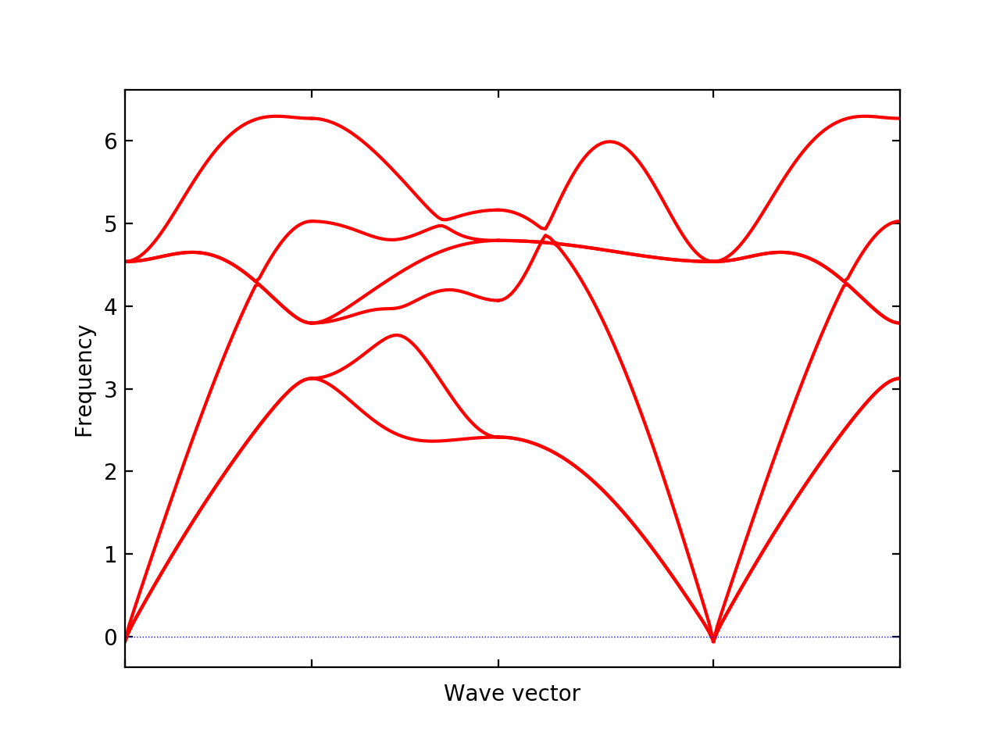

Quantum ESPRESSO (QE) & phonopy calculation#
Quantum ESPRESSO package itself has a set of the phonon calculation system. But the document here explains how to calculate phonons using phonopy, i.e., using the finite displacement and supercell approach.
How to run#
The procedure of QE-phonopy calculation is shown below using the
NaCl example found in example/NaCl-QE directory.
Read a QE-PW input file and create supercells with --qe option:
% phonopy --qe -d --dim="2 2 2" -c NaCl.in
In this example, 2x2x2 supercells are created.
supercell.inandsupercell-xxx.in(xxxare numbers) give the perfect supercell and supercells with displacements, respectively. In the case of the NaCl example, two filessupercell-001.inandsupercell-002.inare created. In these supercell files, lines only relevant to crystal structures are given.phonopy_disp.yamlis also generated, which contains information about supercell and displacements.To make QE-PW input files, necessary setting information is added to
supercell-xxx.infiles, e.g., by:% for i in {001,002};do cat header.in supercell-$i.in >| NaCl-$i.in; done
where
header.inis specially made for this NaCl example and this file is found inexample/NaCl-QEdirectory. This setting is of course dependent on systems and has to be written for each interested system. Note that supercells with displacements must not be relaxed in the force calculations, because atomic forces induced by a small atomic displacement are what we need for phonon calculation.Then QE-PW supercell calculations are executed to obtain force on atoms, e.g., as follows:
% mpirun pw.x -i NaCl-001.in |& tee NaCl-001.out % mpirun pw.x -i NaCl-002.in |& tee NaCl-002.out
To create
FORCE_SETS, that is used by phonopy, the following phonopy command is executed:% phonopy -f NaCl-001.out NaCl-002.out
Here
.outfiles are the saved text files of standard outputs of the QE-PW calculations. If more supercells with displacements were created in the step 1, all.outfiles are given in the above command. To run this command,phonopy_disp.yamlhas to be located in the current directory because the information on atomic displacements stored inphonopy_disp.yamlare used to generateFORCE_SETS. See some more detail at Quantum ESPRESSO interface.Now post-process of phonopy is ready to run. The unit cell file used in the step 1 has to be specified but
FORCE_SETSis automatically read. Examples of post-process are shown below.% phonopy --qe -c NaCl.in -p band.conf _ _ __ | |__ ___ _ __ ___ _ __ _ _ | '_ \| '_ \ / _ \| '_ \ / _ \ | '_ \| | | | | |_) | | | | (_) | | | | (_) || |_) | |_| | | .__/|_| |_|\___/|_| |_|\___(_) .__/ \__, | |_| |_| |___/ 1.13.0 Python version 2.7.14 Spglib version 1.10.3 Calculator interface: qe Band structure mode Settings: Supercell: [2 2 2] Primitive axis: [ 0. 0.5 0.5] [ 0.5 0. 0.5] [ 0.5 0.5 0. ] Spacegroup: Fm-3m (225) Computing force constants... max drift of force constants: -0.001194 (zz) -0.000000 (zz) Reciprocal space paths in reduced coordinates: [ 0.00 0.00 0.00] --> [ 0.50 0.00 0.00] [ 0.50 0.00 0.00] --> [ 0.50 0.50 0.00] [ 0.50 0.50 0.00] --> [-0.00 -0.00 0.00] [ 0.00 0.00 0.00] --> [ 0.50 0.50 0.50] ...
--qe -c NaCl.inis specific for the QE-phonopy calculation but the other settings are totally common among calculator interfaces such as% phonopy --qe -c NaCl.in --dim="2 2 2" [other-OPTIONS] [setting-file]
For settings and command options, see Setting tags and Command options, respectively, and for examples, see Examples.
{kind=link}
Non-analytical term correction (Optional)#
To activate non-analytical term correction, BORN (optional) is
required. This file contains the information of Born effective charge
and dielectric constant. These physical values are also obtained from
the PW (pw.x) & PH (ph.x) codes in Quantum ESPRESSO
package. There are two steps. The first step is usual self-consistent
field (SCF) calculation
by and the second step is running its response function calculations
under DFPT.
For the SCF calculation, the input file NaCl.in looks like:
&control
calculation = 'scf'
tprnfor = .true.
tstress = .true.
pseudo_dir = '/home/togo/espresso/pseudo/'
/
&system
ibrav = 0
nat = 8
ntyp = 2
ecutwfc = 70.0
/
&electrons
diagonalization = 'david'
conv_thr = 1.0d-9
/
ATOMIC_SPECIES
Na 22.98976928 Na.pbe-spn-kjpaw_psl.0.2.UPF
Cl 35.453 Cl.pbe-n-kjpaw_psl.0.1.UPF
ATOMIC_POSITIONS crystal
Na 0.0000000000000000 0.0000000000000000 0.0000000000000000
Na 0.0000000000000000 0.5000000000000000 0.5000000000000000
Na 0.5000000000000000 0.0000000000000000 0.5000000000000000
Na 0.5000000000000000 0.5000000000000000 0.0000000000000000
Cl 0.5000000000000000 0.5000000000000000 0.5000000000000000
Cl 0.5000000000000000 0.0000000000000000 0.0000000000000000
Cl 0.0000000000000000 0.5000000000000000 0.0000000000000000
Cl 0.0000000000000000 0.0000000000000000 0.5000000000000000
CELL_PARAMETERS angstrom
5.6903014761756712 0 0
0 5.6903014761756712 0
0 0 5.6903014761756712
K_POINTS automatic
8 8 8 1 1 1
where more the k-point mesh numbers are specified. This may be exectued as:
% mpirun ~/espresso/bin/pw.x -i NaCl.in |& tee NaCl.out
Many files whose names stating with pwscf should be created. These
are used for the next calculation. The input file for the response
function calculations, NaCl.ph.in, is
created as follows:
&inputph
tr2_ph = 1.0d-14,
epsil = .true.
/
0 0 0
Similary ph.x is executed:
% mpirun ~/espresso/bin/ph.x -i NaCl.ph.in |& tee NaCl.ph.out
Finally the Born effective charges and dielectric constant are
obtained in the output file NaCl.ph.out. The BORN file has to
be created manually following the BORN format
(BORN (optional)). The BORN file for this NaCl calculation would
be something like below:
default value
2.472958201 0 0 0 2.472958201 0 0 0 2.472958201
1.105385 0 0 0 1.105385 0 0 0 1.105385
-1.105385 0 0 0 -1.105385 0 0 0 -1.105385
Once this is made, the non-analytical term correction is included
just adding the --nac option as follows:
% phonopy --qe --nac -c NaCl.in -p band.conf

Using q2r.x to create phonopy force constants file#
Experimental
A parser of q2r.x output is implemented experimentally. Currently
command-line user interface is not prepared. Using the following
script, the force constants file readable by phonopy is
created. Probably thus obtained force constants are required to be
symmetrized by the translational invariance condition using
FC_SYMMETRY = .TRUE..
#!/usr/bin/env python
import sys
from phonopy.interface.qe import read_pwscf, PH_Q2R
primcell_filename = sys.argv[1]
q2r_filename = sys.argv[2]
cell, _ = read_pwscf(primcell_filename)
q2r = PH_Q2R(q2r_filename)
q2r.run(cell)
q2r.write_force_constants()
Saving this script as make_fc_q2r.py, this is used as, e.g.,
% python make_fc_q2r.py NaCl.in NaCl.fc
This gives force_constants.hdf5 file in the compact format (see
FORCE_CONSTANTS and force_constants.hdf5). From version 1.13.2, full supercell
force constants can be written by q2r.run(cell, is_full_fc=True)
instead of q2r.run(cell) in the above
script. FORCE_CONSTANTS file instead of force_constants.hdf5
can be obtained by q2r.write_force_constants(fc_format='text').
Non-analytical term correction#
Treatment of non-analytical term correction (NAC) is different between
phonopy and QE. For insulator, QE automatically calculate dielectric
constant and Born effective charges at PH calculation when q-point
mesh sampling mode (ldisp = .true.), and these data are written in
the Gamma point dynamical matrix file (probably in .dyn1
file). When running q2r.x, these files are read including the
dielectric constant and Born effective charges, and the real space
force constants where QE-NAC treatment is done are written to the q2r
output file. This is not that phonopy expects. Therefore the
dielectric constant and Born effective charges data have to be removed
manually from the Gamma point dynamical matrix file before running
q2r.x. Alternatively Gamma point only PH calculation with ‘epsil =
.false.’ can generate the dynamical matrix file without the dielectric
constant and Born effective charges data. So it is possible to replace
the Gamma point file by this Gamma point only file to run q2r.x
for phonopy.
Creating BORN file#
If the q2r.x output contains dielectric constant and Born
effective charges, the following script can generate BORN format
text.
#!/usr/bin/env python
import sys
import numpy as np
from phonopy.structure.symmetry import elaborate_borns_and_epsilon
from phonopy.interface.qe import read_pwscf, PH_Q2R
primcell_filename = sys.argv[1]
q2r_filename = sys.argv[2]
cell, _ = read_pwscf(primcell_filename)
q2r = PH_Q2R(q2r_filename)
q2r.run(cell, parse_fc=False)
if q2r.epsilon is not None:
borns, epsilon, _ = elaborate_borns_and_epsilon(
cell,
q2r.borns,
q2r.epsilon,
supercell_matrix=np.diag(q2r.dimension),
symmetrize_tensors=True)
print("default")
print(("%13.8f" * 9) % tuple(epsilon.ravel()))
for z in borns:
print(("%13.8f" * 9) % tuple(z.ravel()))
Saving this script as make_born_q2r.py,
% python make_born_q2r.py NaCl.in NaCl.fc > BORN
NaCl example#
NaCl example is found at phonopy/phonopy.
% phonopy --qe -c NaCl.in --dim="8 8 8" --band="0 0 0 1/2 0 0 1/2 1/2 0 0 0 0 1/2 1/2 1/2" --readfc --readfc-format=hdf5 --fc-symmetry --nac -p